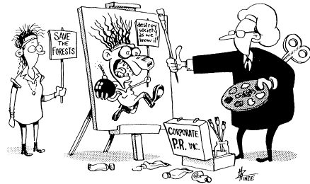

Use this site to look up email addresses and telephone book listings
for anyone in the United States. This is the only site I've found
that will let you search phone directories using only the beginning
of someone's last name, e.g., everyone whose last name starts "Br..."
living in Rio, Wisconsin. This is useful if you don't know the spelling.
This site does the best job of any I've seen at looking for peoples'
email addresses, with powerful features such as a "fuzzy logic"
search for email addresses that looks for variant spellings of a name.
Analyzes the right-wing network that is working to undermine teachers'
unions and promote taxpayer-subsidized "school choice" as
an "alternative" to public schools.
A database of 160,000 movies, which lets internet users post their
own reviews. It's more a resource for past releases than current releases,
and doesn't appear to have many reviews. (For example, it had only
one review for "When Harry Met Sally.") However, it also
has other information such as cast lists.
Online TV programming schedules, searchable by geographic area.

This cartoon shows how the public relations industry
portrays environmentalists. It first appeared in PR Watch, the quarterly watchdog newsletter that I co-edit
with John Stauber.
AET is an "international association of chemical manufacturers
and forest products companies dedicated to improving the environmental
performance of the pulp and paper industry. AET supports the use of
Elemental Chlorine-Free (ECF) technology, based on chlorine dioxide."
The reality: although less harmful than using chlorine, ECF is still
considerably worse than Totally Chlorine-Free paper production (TCF).
There is also some indication that ECF processes may release more
elemental chlorine than originally expected.
The Chlorine Chemistry Council is sponsored by the chlorine industry
to refute activist warnings about chlorine-related environmental hazards.
This site has lots of the industry's self-serving position papers
and news releases, along with a few industry-sympathetic news clippings.
Unfortunately, it doesn't have a search engine, so finding the topic
you're interested in can take awhile.
The Clearinghouse on Environmental Advocacy and Research (CLEAR)
is a project of the Washington, DC-based Environmental Working Group.
CLEAR tracks the "Wise Use" movement, corporate industry's
"grassroots" backlash against environmentalism. Its website
includes a searchable database of more than 4,000 Wise Use donors,
along with extensively-researched articles analyzing the Wise Use
movement and its goals.
This site debunks a number of anti-environmental front groups and
think tanks, such as Steven Milloy's Junk Science Home Page and the
American Council for Science and Health.
Earth Island Institute was founded in 1982 by David Brower to support
projects for the conservation, preservation, and restoration of the
global environment. It has more than 30 projects worldwide working
on rainforest protection, habitat protection for whales and dolphins,
protection of sea turtle nesting beaches, the emerging Russian environmental
movement, protection for Indigenous sacred lands, promotion of organic
agriculture, etc. Its website includes back issues of Earth Island
Journal, the institute's award-winning quarterly magazine.
This site is provided by the U.S. EPA. Like the Environmental
Scorecard below, it makes information available about toxic releases
by industry. EPA's site is has more data, but it is a lot less user-friendly
and lacks the features that lets you look up information about the
actual effects of listed chemicals.
A very slick website with quite a bit of information on environmental
topics, presented in a relentlessly cheery manner. It seems to lack
much of a political edge, however, and the content is buried under
several layers of topic outlines.
Created by the Environmental Defense Fund, this user-friendly site
makes it easy to identify polluting industries in your area, based
on data from the U.S. Environmental Protection Agency's Toxic Release
Inventory. Just type in your zip code, and it gives you a list. It
also lets you look up descriptions of specific chemicals and their
health effects.
A project of the Pace University School of Law, this site provides
extensive information about the global warming issue. A range of perspectives
are represented, including those of corporate naysayers.
The OISM is a right-wing, quasi-survivalist group with no meaningful
credentials in climate science that circulated a misleading petition
accompanied by a "scientific study" that was cleverly designed
to look like it came from the National Academy of Sciences.
Dioxin, DDT, Agent Orange, PCBs and ozone-destroying CFCs ... What
do this century's most notorious environmental toxins have in common?
Greenpeace explains the scientific evidence linking chlorinated chemicals
to a variety of severe health effects on people.
The LCV calls itself the "national political arm of the environmental
movement." Its website includes an environmental scorecard which
assesses how each member of Congress votes on the environment.
RAN "works to protect the Earth's rainforests and support the
rights of their inhabitants through education, grassroots organizing
and nonviolent direct action." A very attractive, well-designed
site.
Free access to numerous databases, text files, and conferences on
the environment, housing, and sustainable development. Lets you analyze
specific factories and their environmental record. This site isn't
as easy to use as the Environmental Scorecard, but it has a lot of
information you won't find in the Toxic Release Inventory.
Reviews of books dealing with technological and other risks. This
is a great place to visit if you want to compile a shopping list of
dangers that the experts are ignoring.
This website by the Technical Assistance Bureau provides courtroom
expert witnesses. They also have an online newsletter with lots of
short informative articles.
This is the Statistical Assessment Service,
posing as a resource starting page for journalists. It offers experts
and sources -- all with a right-wing spin.